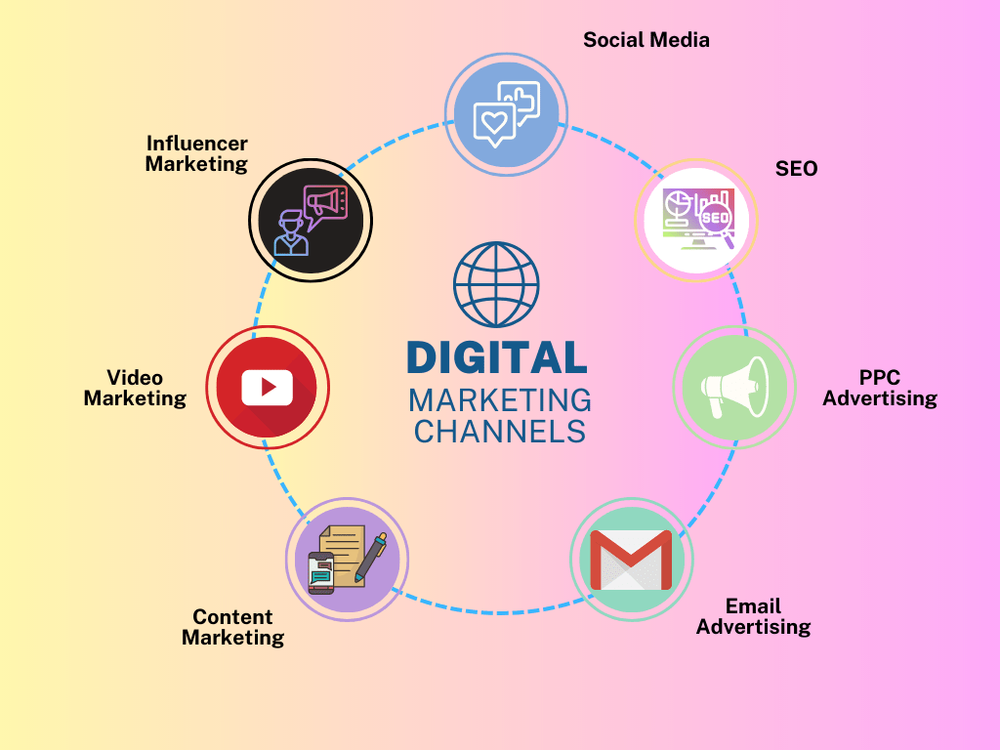

What is Search Engine Optimization? Search Engine Optimization (SEO) is a crucial component of digital marketing that focuses on improving a website's visibility in search engine results pages (SERPs). By optimizing various aspects of a website and its content, SEO aims to increase organic traffic, enhance user experience, and boost the site's relevance and authority for specific keywords and phrases. This process involves a comprehensive strategy encompassing on-page SEO, technical SEO, and off-page SEO, each targeting different elements that search engines consider when ranking pages.
On-Page SEO: Optimizing Content and Structure On-page SEO refers to the optimization of elements within a website that can be controlled directly. This includes the quality and relevance of content, the use of keywords, and the structuring of HTML tags like titles, meta descriptions, and headers. Effective on-page SEO ensures that the content is not only rich and informative but also well-organized and easy to understand both for users and search engine algorithms. It's about creating content that answers users' questions and provides value, while also incorporating keywords naturally and strategically. Additionally, on-page SEO extends to optimizing images through alt tags and ensuring that the overall website architecture facilitates easy navigation and a positive user experience.
The PPC has evolved as a particularly versatile search engine promoting technique by the virtue of that fast and speedy results and huge traffic volume is often looked for the targeted websites. Thus, the scope of PPC has accumulated manifolds associated it will not be an exaggeration to state that individuals like PPC quite its counterparts SEO and SMO. Therefore, at Pankaj Kumar seo, we tend to impart associate in-depth analysis and each minute detail in relevant keywords and complicated accounts handling for the aim of optimizing clicks and to collect a lot of business than your competitor. Check out this discussion of Benefits of PPC for a complete Guide.
Technical SEO: Enhancing Website Performance and Accessibility Technical SEO focuses on the technical aspects of a website that affect its ranking in search engines. This includes website speed, mobile responsiveness, structured data, and website security (HTTPS). Technical SEO aims to improve the website's backend structure and foundation, ensuring it is crawlable and indexable by search engines. It involves optimizing the website's code and server configurations to reduce loading times, ensuring the site is accessible and user-friendly across all devices, and implementing structured data to help search engines understand the content and context of a site. Additionally, technical SEO encompasses the management of crawl errors, redirects, and duplicate content, which are critical for maintaining a healthy site that search engines can easily navigate and interpret.
Off-Page SEO: Building Authority with Backlinks Off-page SEO primarily revolves around building a website's authority and reputation through external means, predominantly through backlinks. Backlinks are links from other websites that lead back to your site, acting as endorsements that signal to search engines the credibility and relevance of your content. High-quality, relevant backlinks from authoritative websites greatly contribute to a website's domain authority, thus positively impacting its search engine rankings. Off-page SEO strategies include guest blogging, influencer collaborations, and creating shareable content. This aspect of SEO also encompasses social media marketing and brand mentions, which, while not directly influencing rankings, play a role in building online presence and credibility, which can indirectly support SEO efforts. The key in off-page SEO is to focus on earning links naturally through valuable content and genuine relationships, rather than resorting to artificial link-building tactics.
SEM Strategies: The Power of Pay-Per-Click A cornerstone strategy of SEM is pay-per-click (PPC) advertising. In this model, businesses bid on keywords relevant to their products or services and pay a fee each time their advertisement is clicked. This approach is beneficial for several reasons. SEM offers rapid results, often driving traffic to a website shortly after the campaign begins. PPC advertising is also highly customizable, allowing businesses to tailor their campaigns based on specific keywords, geographic location, and the online behavior of their target audience. This level of customization ensures that ads are displayed to users who are most likely to be interested in the product or service, increasing the likelihood of conversion. PPC campaigns offer the flexibility to adjust budgets and strategies in real time based on performance analytics, providing a significant advantage in optimizing marketing efforts and expenditure.
The internet is a beautiful place packed to the brim with information and cat videos. The sheer size and scale of the internet are immense and almost incomprehensible. But the internet is more than a safe haven for adorable puppy videos and tutorials on how to boil water: it is any company’s marketing dream come true. On a single platform, companies can connect and reach millions of people, communicate with them, and share their messages with them. Companies have swarmed the internet in recent years to take advantage of this, a strategy known as Digital Marketing. Now you may have heard of Digital Marketing along with various other hype words in seminars and other marketing-related events. As much as you may not want to believe them, people overhyping the effectiveness of Digital Marketing are often right. So if you have been somewhat hesitant in using Digital Marketing — it can be overwhelming — this post will help you slide right into the scene.

Best Digital Marketing Course We conduct Digital Marketing Course . Bem an Expert in Digital Marketing. We also conduct 100% placement program for those who want to see their future in Digital Marketing. Course Modules are Web Design, SEO, Google ADs, Google Analytics, Social Media Marketing etc. Digital Marketing experts are in high demand & have become mandatory for a majority of professionals in the industry. Since 2017, we have trained many entrepreneurs, professionals, and students through our courses. The best Digital Marketing training and services. We help our trainees in Placement also. is the most valuable training center in this area. We provide training in Website Design, SEO, Google Ads (PPC), Social Media Marketing, Lead Generation, Email Marketing, etc. Our course has been designed as per the latest industry trends. Digital Marketing is a dynamic concept. The regular occurrence of new trends and updates leads to fluctuations in the landscape. Digital Marketing tips that might have done wonders a year before may not work now. Digital Marketing Skills are in high demand & have become mandatory for a majority of professionals in the industry. Since 2017, we have trained many entrepreneurs, professionals, and students through our courses.
Digital marketing also includes a range of approaches and tactics to reach and persuade the target audience through digital media, including email marketing, social media marketing, search engine optimization (SEO), content marketing and online advertising. The goal of digital marketing is to improve brand awareness, generate leads, increase website traffic and, ultimately, drive sales and business growth. The process can involve digital marketing tactics similar to traditional marketing. Organizations can combine both traditional and digital marketing techniques as a strategy.
Digital Marketing rises a big game-changer in most of the modern industries over the last few years. More than 75% of companies are investing or are planning to invest in Digital Marketing. Digital Marketing jobs will create in almost all industries and countries. But, there is nevertheless a large number of unfilled jobs across the globe due to the shortage of required skills. Certified 7+ years of Experienced Trainer Salary Growth 100% Job Placement Assistance Huge Job Opportunities work on live Websites
The digital marketing courses we offer are designed to help prepare you for a career in SEO optimization, content marketing, social media strategy, and online advertising, equipping you with the skills to excel in the dynamic world of digital marketing.
The Digital Marketing team is ready to help you with any questions you may have, including how to use our products, bug reports, and other FAQs. The Digital Marketingteam is happy to offer suggestions to help you get the most out of . If you're new to , you can visit the Help Center to learn more about using the platform and find answers to your questions.
Contact Digital Marketing SupportDigital Marketing is one of the most used and popular social media platforms in the entire world. Millions of people use Digital Marketingto stay connected with friends and family, to share ideas, photos, and videos, and to keep up with the latest social media buzz. Digital Marketing is a social networking service headquartered in California and available in almost every country in the world. With over a billion monthly users worldwide. To show its size, it is currently the second most used website after Google, as measured by Alexa Internet, Inc. Today, Digital Marketinghas more than 2 billion users around the world, 1.2 billion of which are outside of the United States. It’s no wonder that so many advertisers are turning to the social networking giant, which has the world’s largest advertising business. It has more than 2.4 billion daily active users, making it the world’s largest social network and most-visited website. There are so many ways to connect and chat with your friends on . Apart from connecting and chatting with your friends on , there are a number of sources are available that one can follow to get more out of . One can visit Digital MarketingGroups, Pages, Instagram, and Digital MarketingVideo to get more. There are a number of fascinating communities on Digital Marketingthat one can join to connect and learn more about various topics. Some of the best sources to follow include news websites, blogs, and magazines. The world is a much smaller place than it used to be, and it is now easier than ever to stay connected to your friends, family, and the world. Many businesses have also adopted Digital Marketingas a platform for communication with customers and have built marketing campaigns around it.

As Digital Marketing has grown the business of many entrepreneurs, of course, a Digital Marketinguser needs to connect with Digital Marketingcustomer service to get help. Digital Marketingoffers a Digital MarketingSupport service where you can get help by chat, email, phone, or video for any Digital Marketingproduct or feature. You can also get help by visiting the Digital MarketingHelp Center. If you're having trouble with a Digital Marketingproduct or feature, visit the Digital MarketingContact Support Help Center. You can also get help by visiting the Digital MarketingDevelopers Help Forum. The Digital Marketingteam is ready to help you with any questions you may have, including how to use our products, bug reports, and other FAQs. The Digital Marketingteam is happy to offer suggestions to help you get the most out of . If you're new to , you can visit the Help Center to learn more about using the platform and find answers to your questions. The Digital Marketingsupport team will do everything possible to help you as quickly as possible. If you don't get help then you have to follow some options including a Digital Marketingphone number or you can contact the Digital Marketingteam via chat, email, phone, or video. If you are a Digital Marketing business user, you must have come across the Chat option. It is a feature that allows you to have in-chat conversations with a Digital Marketingexpert team, wherever they are. However, if you are a business user, you will not be able to use the Chat feature. This is because the Chat feature is only available to users.

WHAT YOU WILL LEARN IN DIGITAL MARKETING COURSE ? Digital Marketing refers to marketing services and products using digital channels, mainly on the internet, to Reach Potential Customers. Everyone needs to increase their business through online marketing. From that, they can get the highest exposure through their ventures. If somebody truly needs to promote their business online. It is best to join this digital marketing course in Delhi rather than recruit Someone or outsource your business to a Digital Marketing Company. If you are using the right strategy to promote your business online, then it will not ruin your money and efforts that you will give to boost your company. Hiring Someone or outsourcing your work to an Internet Marketing Company may not provide you with the best quality result. But, it is essential for your venture. That is the reason you need to know about How Internet Marketing Works? Throughout this digital Marketing Training Course, you will be working on your website and going to Master all the concepts and skills.
Contact Digital Marketing Number